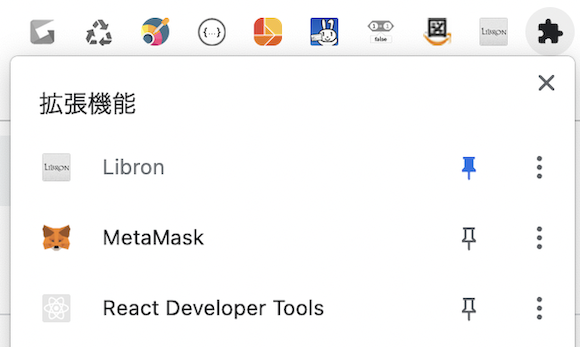

以下のリンク先より、Libron の Chrome Extension 版をインストールします。 » Libron - Google Chrome extension gallery
Chrome のメニュー右端の方に表示されている拡張機能のアイコン（パズルのピースの形）をクリックし、Libron の右横のピンのアイコンをクリックして拡張機能のバーに固定して常に Libron のアイコンが表示されるようにしておきます。
